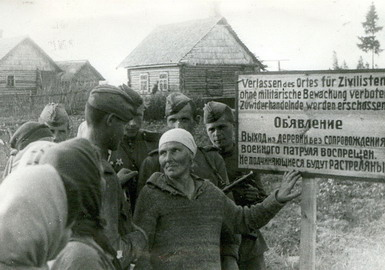

июль - август 2009 года
НЕИЗВЕСТНАЯ БИТВА
(Окончание. Начало на первой полосе.)
15-я воздушная армия с переходом 10-й гвардейской и 3-й ударной армий в наступление поддерживала их действия бомбардировочной и штурмовой авиацией, штурмовала и бомбила скопления войск, огневые позиции артиллерии, железнодорожные узлы и аэродромы врага.
Внезапное и нестандартное начало наступления наших войск ошеломило противника. Пленный командир 655-го саперного батальона рассказывал на допросе: «Я не мог себе представить, что на четвертом году войны наступление русских будет предпринято в таких огромных масштабах и развиваться такими стремительными темпами Напрасно мы надеялись на укрепления, как известно, они нигде и никогда не спасали, особенно при современной технике». Обер-фельдфебель 68-го пехотного полка 23-й дивизии показал: «11 июля мы собирались начать отход на основную позицию, однако русские еще раньше прорвались на участке 9-го полка. К вечеру мы потеряли связь с полком». Рядовой 44-го пехотного полка признался: «Я — первый номер артиллерийского расчета. Из своей пушки мы не успели сделать ни одного выстрела, так как русские солдаты напали на нас неожиданно. Мы все сдались в плен. Из орудийной прислуги убежал только наш капрал».
Таким образом, войска 10-й гвардейской и 3-й ударной армий прощупав разведкой боем передний край противника, стремительной атакой прорвали первую полосу обороны гитлеровцев и продолжали наступление в глубину, дезорганизуя отход, порождая в его рядах панику и смятение вводом в прорыв подвижных групп. Под ударами войск 3-й ударной и 10-й гвардейской армий противник вынужден был отходить отдельными группами, потеряв управление. В результате ряд подразделений, особенно 23-й и 15-й дивизий СС, оказались отрезанными от основных колонн и рассеялись в лесах, откуда затем выдавливалась и брались в плен продвигавшимися стрелковыми частями и тыловыми подразделениями. Планомерный отвод гитлеровским командованием своих сил был сорван активными и решительными действиями наших войск.
На левом фланге фронта (в полосе наступления 4-й ударной и 22-й армий) события развивались в первые сутки не так стремительно, как предполагалось. Обусловлено это было тем, что на направлении наступления этих армий противник имел полнокровные дивизии с хорошо подготовленной системой огня, а также наличие естественного препятствия — реки Сарьянка, форсировать которую вброд не было возможности. Кроме того, характер местности на участке прорыва не давал достаточной возможности для сочетания огневой мощи артиллерии с ударной силой танков. Большое количество озер, ручьев, болотистых участков, слабо развитая сеть дорог ограничивали маневр мотомеханизированных средств.
Однако, несмотря на указанные неблагоприятные факторы, войска 22-й армии, начавшие действия в ночь на 11 июля разведывательными группами, овладели к 2 часам ночи передовыми траншеями. В 4 часа утра были введены передовые отряды, а затем и главные силы армии. 13 июля армейская подвижная группа сломила сопротивление гитлеровцев и начала развивать успех в направлении Освеи. Однако за 14 июля войска армии продвинулись всего на 12 километров. В этот день гитлеровцы предприняли до десяти контратак, поддержанных танками и авиацией.
4-я ударная армия начала наступление своим левым флангом вдоль правого берега р. Западная Двина. Действия первоначально развивались здесь не столь успешно, как на других участках. В связи с этим, пришлось ввести в сражение армейские резервы. Усиление первого эшелона позволило в ночь на 12 июля форсировать р. Дрисса в районе Волынцы. Образовался плацдарм, позволявший развивать наступление. В сложившейся ситуации гитлеровское командование начало поспешно отводить части 389, 87, 24-й пехотных дивизий с промежуточного рубежа рек Нища и Дрисса в северозападном направлении. Этот отход прикрывался отдельными отрядами и инженерно-минными заграждениями.
С целью развития успеха на этом направлении было принято решение ввести в образовавшийся прорыв фронтовой резерв - основные силы 5-го танкового корпуса. Ввод фронтового резерва позволил улучшить положение на этом направлении.
Ожесточённые и кровопролитные бои развернулись за город Опочка. 14 июля, гитлеровцы, используя подошедшие подкрепления, контратаковали наступающих восточнее и юго-восточнее Опочки, а 15 июля подтянув новые резервы, попытались остановить продвижение наших войск. Особенно ожесточенные бои имели место в ночь на 15 июля.
15 июля в 3 час. 15 минут наши войска атаковали противника в западной части города. Кровопролитные бои с неослабевающим напряжением шли весь остаток ночи и день. К 16 часам, сломив сопротивление противника и преследуя его, 29-я гвардейская дивизия овладела городом Опочка и близлежащими населенными пунктами.
Не менее ожесточенные и кровопролитные боевые действия развернулись за город Идрица, который был важным опорным пунктом гитлеровцев. Идрицкие аэродромы были основными базами 130 боевых самолетов в полосе его обороны. Через этот город проходил основной тыловой оборонительный рубеж, который укреплялся в течение многих месяцев. Город был опоясан противотанковым рвом и широко развитой сетью траншей с открытыми площадками для огневых точек. Отдельные участки дорог и пересечения коммуникаций прикрывались дотами и дзотами. Гитлеровцы приспособили город к круговой обороне, оборудовали большинство зданий на окраинах как огневые точки. Идрицу с Полоцком, Резекне, Пустошкой связывают железнодорожные коммуникации, которые дополняются густой сетью шоссейных дорог, что позволяло немецкому командованию легко маневрировать своими резервами.
Упорное сопротивление нашим войскам было оказано в районе Себежского оборонительного узла, Однако в 8 часов утра 17 июля батальоны 756-го стрелкового полка ворвались в город Себеж.
Анализируя итоги наступательной операции 2-го Прибалтийского фронта с 10 по 19 июля, правомерно утверждать, что внезапное и нестандартное начало боевых действий позволило нашим войскам прорвать в первые сутки главный оборонительный рубеж противника «Пантера» и преодолеть тактическую полосу обороны. После ожесточенных боев войска прорвали второй, заблаговременно подготовленный оборонительный рубеж «Рейер» по линии: Опочка — Себеж — Освея, имеющий железобетонные сооружения и многочисленные инженерно-минные заграждения. Развивая наступление, войска фронта преодолели промежуточный оборонительный рубеж «Блау», проходящий по рекам Синяя и Шкяуне, а далее по границе Калининской области до реки Западная Двина. Затем они вышли к новому рубежу, который именовался «Грюн» и был оборудован по западному берегу рек Лжа, Лудза, Рунданы, Дагда, Краслава. За девять дней войска фронта преодолели три мощных оборонительных рубежа, не считая ряда других, менее значительных рубежей и большого количества различных узлов сопротивления и опорных пунктов, продвинулись от 90 до 110 км на запад.
В результате боев нашими войсками почти полностью были разгромлены 6 пехотных полков, 7 пехотных батальонов, 2 штурмовых батальона, 1 саперный и 1 охранный батальоны. Остальные части и соединения противника потеряли от 30 до 50 % личного состава, много вооружения. Было взято в плен свыше 5000 человек, уничтожено более 30 тысяч солдат и офицеров противника.
Освобождением городов Идрица, Опочка, Освея, Себеж и других населенных пунктов завершилось освобождение Калининской области от фашистских захватчиков.
Михаил Хетчиков
Об авторе:
ХЕТЧИКОВ Михаил Дмитриевич. Родился 28 августа 1945 года в с. Огурцы Абанского района Красноярского края. Окончил Кемеровское военное училище связи, Военную академию РХБ имени Тимошенко. Полковник запаса. Доктор военных наук (1990), профессор (1991), действительный член Петровской академии наук и искусств (1998), действительный член Академии военных наук (2007). Имеет более 180 научных трудов, авторские свидетельства на изобретения.
С 1996 года — президент Тверского общественного фонда поддержки Мемориального комплекса славы воинам-сибирякам, с июля 2008 года - председатель Тверского регионального научного военно-исторического центра. За личный вклад в увековечение ратного подвига воинов Красной армии в Великой Отечественной войне удостоен почетного звания «Лауреат форума «Общественное признание».